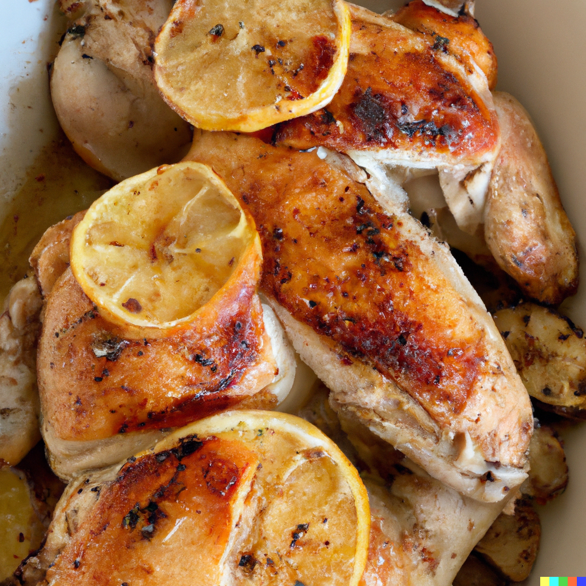

Baked Lemon Garlic Chicken

A flavorful and juicy chicken dish with the tangy taste of lemon and the richness of garlic.
Ingredients
- Chicken breasts (4, boneless and skinless)
- Lemon (1, juiced and zested)
- Garlic cloves (3, minced)
- Olive oil (2 tablespoons)
- Paprika (1 teaspoon)
- Salt (1/2 teaspoon)
- Black pepper (1/4 teaspoon)
- Fresh thyme (1 tablespoon, chopped)
Steps
- Preheat the oven to 400°F (200°C).
- In a small bowl, mix together the lemon juice, lemon zest, minced garlic, olive oil, paprika, salt, black pepper, and chopped thyme to make a marinade.
- Place the chicken breasts in a baking dish and pour the marinade over them, making sure that the chicken is well coated.
- Bake the chicken in the preheated oven for 25-30 minutes, or until it is cooked through and the juices run clear.
- Remove the chicken from the oven and let it rest for a few minutes before slicing and serving hot.